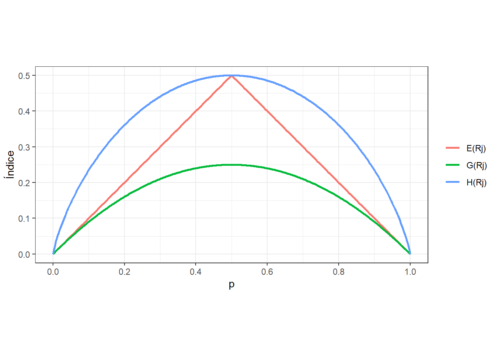
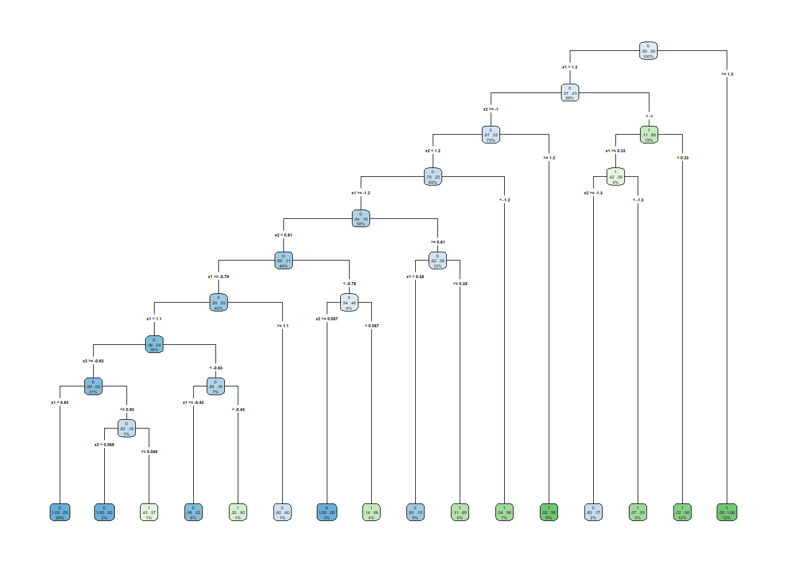
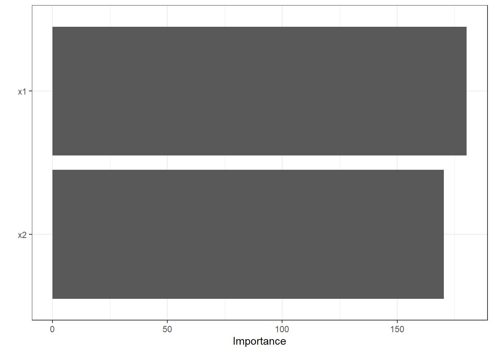
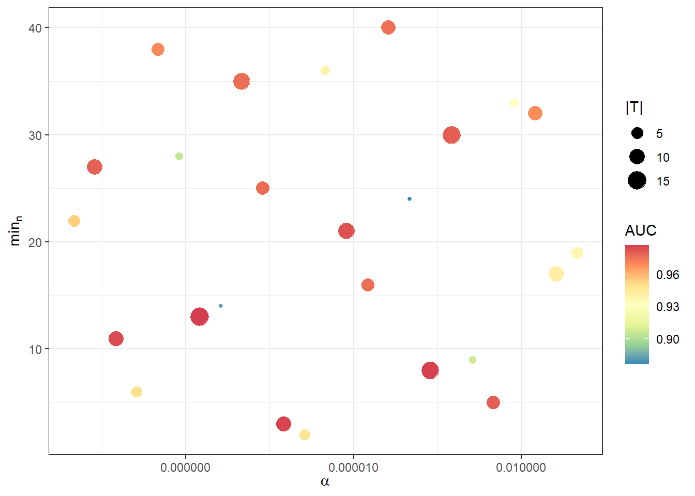
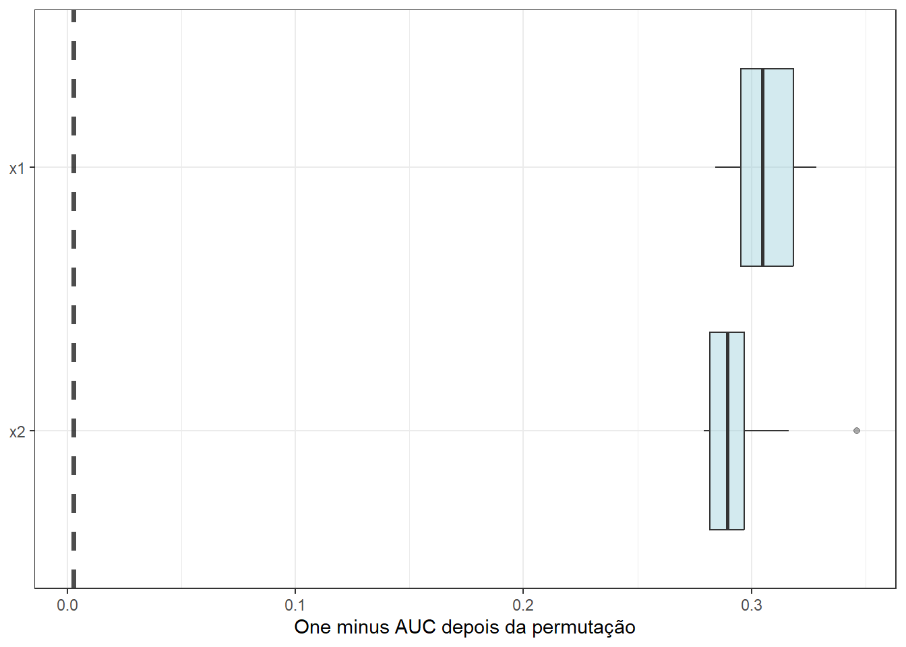
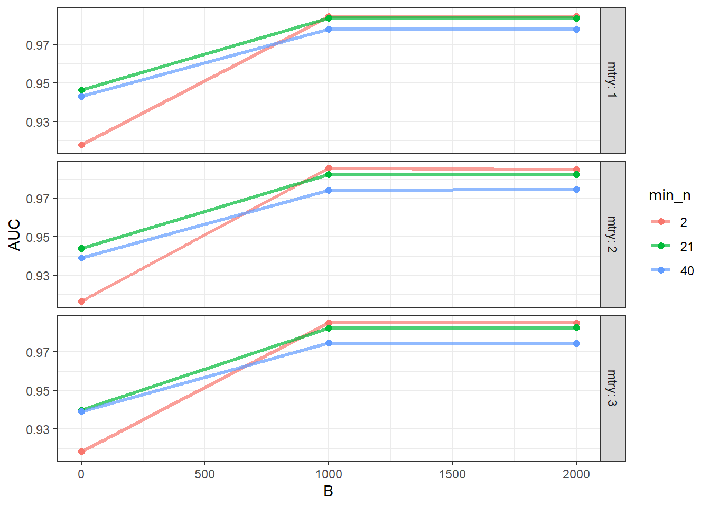
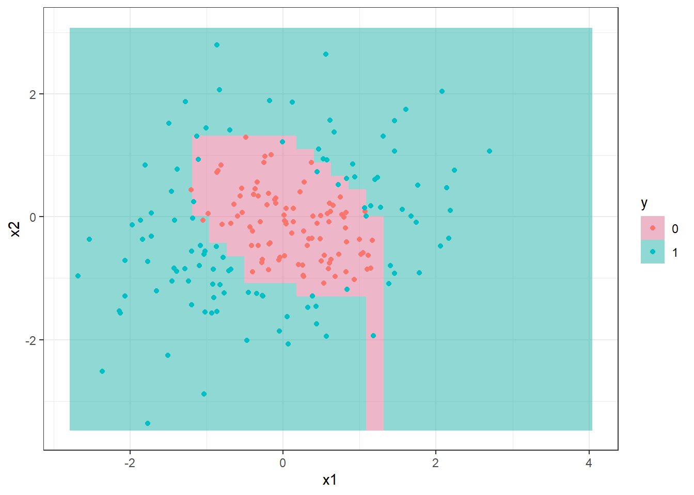

14 Classificação via árvores de decisão e floresta aleatória
14.1 Árvores de decisão para classificação
As árvores de decisão podem ser usadas para classificação, sendo construídas de forma similar às de regressão. Conforme já dito, o método foi concebido inicialmente para classificação e, posteriormente, foi adaptado para regressão. Entretanto, neste livro foram apresentados primeiro os métodos para regressão. De forma similar às árvores de regressão as árvores de classificação dividem recursivamente o espaço dos preditores em regiões retangulares, sendo a classificação realizada segundo a classe com mais observações na região. O conjunto de regras que define as regiões também pode ser representado em um diagrama de árvore similar ao da Figura 14.1.
A Figura 14.2 exibe um gráfico com as divisões no espaço dos preditores e regiões para as duas classes para um modelo de árvore de decisão para classificação binária correspondente ao modelo da Figura 14.1. Também são exibidos dados de teste. Observa-se que neste caso são determinadas 5 regiões para ao final definir um retângulo central quepara a classe 0, com as regiões ao redor para a classe 1.

Sejam \(k\) variáveis de entrada, \(\mathbf{x}=[x_1,x_2,...x_k]^T\), e uma resposta categórica, \(y \in \{c_1,c_2, ..., c_Q\}\), além de \(i=1,...,n\) observações de treino, \((\mathbf{x}_i,y_i)\). O algoritmo de (Classification and Regression Trees - CART) para classificação, de forma análoga à regressão, define a cada iteração a variável preditora e o seu nível para particionar o espaço dos preditores. Considerando \(J\) regiões \(R_1, R_2, ..., R_J\), \(\gamma_j\) consiste na classe predita na região \(j\), \(j=1,...,J\). Portanto, o modelo de árvore de regressão pode ser definido conforme a Equação 14.1, \(j=1,\ldots,J\), onde \(I(\mathbf{x} \in R_j)\) é uma função indicativa que recebe 1 se \(\mathbf{x}\) pertence à região \(R_j\) e 0 caso contrário. Logo, deve-se definir qual critério usar em classificação para discriminar cada região.
\[ \begin{aligned} f(\mathbf{x}) = T(\mathbf{x},R_j,\gamma_j) = \sum_{j=1}^J \gamma_jI(\mathbf{x} \in R_j) \end{aligned} \tag{14.1}\]
Considerando métricas de minimização, um critério simples poderia ser a proporção de classificações incorretas, \(E(R_j)\), conforme Equação 14.2, onde \(n_j\) é o número de observações na região \(j\) e \(I(y_i \neq c)\) recebe um 1 se \(y_i \neq c\) e 0 caso contrário.
\[ E(R_j) = \frac{1}{n_j} \sum_{\mathbf x_i \in R_j} I(y_i \neq c) \tag{14.2}\]
O índice de Gini é uma métrica muito comum como função de impureza nas regiões, sendo calculado conforme Equação 14.3, onde \(\hat{p}_{qj}\) consiste na proporção de observações da classe \(c_q\) na região \(j\). Este índice é minimizado quando todas as proporções são 0 ou 1, garantindo regiões puras.
\[ G(R_j) = \sum_{q=1}^Q \hat{p}_{qj}(1-\hat{p}_{qj}),\text{ } \forall j \tag{14.3}\]
De forma similar, a entropia também é bastante utilizada, sendo calculada conforme Equação 14.4. A entropia também é minima quando todas as proporções são 0 ou 1. Os dois últimos índices são mais fáceis de otimizar, por serem deriváveis, sendo mais comuns como função perda na classificação.
\[ H(R_j) = -\sum_{q=1}^Q \hat{p}_{qj} \text{log }\hat{p}_{qj},\text{ } \forall j \tag{14.4}\]
A Figura 14.3 plota os três índices. Observa-se que as três apresentam mínimo nos extremos, ou seja, quando as regiões apresentam apenas uma classe. Entretanto, apenas o índice de Gini e a entropia são funções convexas, portanto derivaveis.

Considerando todos os dados de treinamento, as divisões são definidas tomando uma variável para divisão, \(x_k\), \(k = 1,..., K\), e um ponto de divisão \(x_k = s\), \(R_1(k,s)\) = \({\mathbf{x}|x_k \leq s}\) e \(R_2(k,s)\) = \({\mathbf{x}|x_k>s}\). Portanto, o algoritmo CART busca a variável para o particionamento e o valor desta na divisão para minimizar o erro de classificação. Considerando o índice de Gini, em cada partição, busca-se minimizar a Equação 14.5, onde \(|.|\) consiste no número de observações, de forma que os índices de Gini em cada região são ponderados pelas proporções de observações nas regiões geradas pela partição.
\[ \begin{aligned} \min_{k,s} \left[ \frac{|R_1(k,s)|}{n} \cdot G(R_1(k,s)) + \frac{|R_2(k,s)|}{n} \cdot G(R_2(k,s)) \right] \end{aligned} \tag{14.5}\]
O algoritmo CART repete o particionamento recursivamente até um determinado critério de parada ser alcançado, por exemplo, até um número mínimo de observações em cada partição ser atingido.
Seja um conjunto de dados sintético para classificação binária exibido na Figura 14.4. Pode-se observar que os dados da classe 0 estão ilhados, cercados por observações da classe 1.

Um modelo de árvore de decisão é exibido na Figura 14.5. De forma análoga ao já explicado em regressão, o modelo de árvore para classificação pode ser descrito como um conjunto de regras “se”/“se não”. Observa-se que, neste caso, foram geradas $|T| = $ 16 partições finais.

Para evitar overfitting, pode-se usar de validação cruzada. A Figura 14.6 plota a área abaixo da curva ROC segundo a profundidade e complexidade de custo da árvore. Pode-se observar que profundidade \(|T|\) de 10 15, ou seja 10 a 15 nós terminais ou folhas, com complexidade de custo \(\alpha\) de \(5 \times 10^{-10}\) a \(4 \times 10^{-5}\) acarretou maior área abaixo da curva ROC, portanto, menor erro de classificação.

Tomando observações de teste pode-se plotar a fronteira de decisão da árvore de classificação no espaço dos preditores conforme Figura 14.7.

14.1.1 Importância dos preditores
A Figura 14.8 apresenta o gráfico de importância dos preditores para a árvore de decisão em questão. Considera-se, neste caso, a redução no erro de classificação de um nó pai para um nó filho de forma acumulada para os preditores considerados. Para o exemplo \(x_1\) foi um pouco mais importante que \(x_2\).

14.2 Bagging
De forma similar à regressão, a agregação por bootstrap ou bagging visa agregar a previsão de várias árvores de decisão. Para tal, são realizadas reamostragens com reposição ou bootstrap dos dados de treino, sendo uma nova árvore para cada reamostragem. Apartir de \(B\) reamostragens e \(B\) árvores, para uma observação de teste ou futura \(\mathbf x_0\) obtém-se \(B classificações\). A partir de tais classificações sabe a proporção de árvores que prevêem cada classe e, ao final, a partir da maior proporção, realiza-se a classificação. Tal classificador pode ser escrito conforme a Equação 14.6, como sendo a moda das classificações das \(B\) árvores obtidas via bootstrap.
\[ \hat f_{bag}= \text{Moda} \{\hat f^*_1(\mathbf x), \hat f^*_2(\mathbf x), \dots, \hat f^*_B(\mathbf x)\} \tag{14.6}\]
A Figura 14.9 plota a área abaixo da curva ROC segundo o grid usado na validação cruzada para obter um modelo via bagging com 100 árvores. O melhor modelo foi obtido com $= $ 1,78 \(\times 10^{-8}\), \(|T|\) = 15 e \(min_n\) = 13.

A Figura 14.10 plota a fronteira de classificação obtida via bagging junto aos dados de teste.

14.2.1 Importância dos preditores
A Figura 14.11 expõe o gráfico de importância de preditores para o bagging. A importância é medida de forma similar à regressão, realizando-se a permutação dos preditores e medindo-se a perda antes e após permutação. Para este exemplo, ambas as variáveis são importantes, sendo \(x_1\) um pouco mais importante que \(x_2\).

14.3 Floresta aleatória
Conforme já discutido em regressão, o modelo de floresta aleatória consiste em uma evolução do modelo bagging com a finalidade de diminuir a variância deste, limitando o número de variáveis a serem consideradas em cada particionamento binário recursivo, \(m<k\), visando decorrelacionar as árvores de decisão geradas. Geralmente, para classificação recomenda-se \(m=\sqrt{k}\). Entretanto, sugere-se definir o \(m\) ótimo junto com os outros hiperparâmetros via validação cruzada.
Para os dados apresentados na Figura 14.4, considerando um grid regular e cinco partições nos dados para definir \(B\), \(m\) e \(min_n\), a Figura 14.12 expõe o resultado da validação cruzada com grid search. \(B = 1000\), \(m = 2\) e \(min_n = 2\) resultam em um melhor resultado, AUC = 0,988.

A Figura 14.13 apresenta a fronteira de decisão obtida via floresta aleatória junto aos dados de teste.

14.4 Implementações em R
A seguir serão expostas as implementações necessárias para obter os resultados do capítulo.
14.4.1 Árvores de decisão
Carregando pacotes.
library(tidymodels)
library(sjdatar)
library(ggplot2)
library(dplyr)
library(rpart.plot)
library(vip)
theme_set(theme_bw())Carregando dados e visualizando dados.
data(simdatac1)
dados <- simdatac1
ggplot(dados, aes(x1,x2,col = y, pch=y)) +
geom_point() +
labs(col = "y", pch = "y")Separando em dados de treino e teste.
set.seed(7)
split <- initial_split(dados, prop = 0.8)
dados_treino <- training(split)
dados_teste <- testing(split)Definindo a receita e o modelo. Para classificação faz-se set_mode("classification").
receita <- recipe(formula = y ~ .,
data = dados_treino)
tree_model <-
decision_tree(cost_complexity = tune(),
tree_depth = tune()) |>
set_engine("rpart") |>
set_mode("classification")Optou-se neste exemplo por um grid irregular com 25 combinações dos hiperparâmetros. Os dados de treino foram divididos em 5 partições. Posteriormente, foi defina o workflow e foi realizada a validação cruzada com grid search.
tree_grid <- grid_space_filling(cost_complexity(),
tree_depth(),
size = 25)
set.seed(234)
cell_folds <- vfold_cv(dados_treino,
v = 5)
set.seed(345)
tree_wf <- workflow() |>
add_recipe(receita) |>
add_model(tree_model)
tree_res <-
tree_wf |>
tune_grid(
resamples = cell_folds,
grid = tree_grid
)Obtendo melhores níveis dos hiperparâmetros segundo a área abaixo da curva ROC.
perf_tree <- tree_res |>
collect_metrics() |>
filter(.metric == "roc_auc")
best_tree <- select_best(tree_res,
metric = "roc_auc")
tree_final <- tree_wf |>
finalize_workflow(best_tree) |>
fit(data = dados_treino)Visualizando o modelo.
tree_final |>
extract_fit_engine() |>
rpart.plot(type = 4, extra = 104, roundint = FALSE)Visualizando a fronteira de decisão com os dados de teste.
xs <- seq(min(dados$x1), max(dados$x1), length = 30)
ys <- seq(min(dados$x2), max(dados$x2), length = 30)
xys <- expand.grid(x1=xs,x2=ys)
xys$y <- predict(tree_final, xys, type = "class")$.pred_class
ggplot() +
geom_raster(data = xys,
mapping = aes(y = x2,
x = x1,
fill = as.factor(y)),
alpha = .5) +
scale_fill_manual(values = c ("palevioletred", "lightseagreen")) +
geom_point(data = dados_teste,
mapping = aes(x=x1,y=x2, col = as.factor(y))) +
labs(col = "y", fill = "y")Previsões com dados de teste.
pred_tree <- bind_cols(
predict(tree_final, dados_teste),
dados_teste
)Matriz de confusão.
cm1 <- conf_mat(pred_tree, truth = y, estimate = .pred_class)
cm1Métricas de classificação.
pred_comp <- bind_cols(
predict(tree_final, dados_teste), # previsao discreta
predict(tree_final, dados_teste, type = "prob"),
dados_teste
)
metricas <- metric_set(accuracy, sensitivity, specificity, roc_auc)
metricas(pred_comp,
truth = y,
estimate = .pred_class,
.pred_0)Curva ROC.
roc_data <- roc_curve(pred_comp, truth = y, .pred_0)
autoplot(roc_data)14.4.2 Bagging
Biblioteca para bagging.
library(baguette)Definindo modelo bagging.
bag_model <-
bag_tree(tree_depth = tune(),
min_n = tune(),
cost_complexity = tune()) |>
set_engine("rpart", times = 50) |>
set_mode("classification")Definindo um grid aleatório com tamanho 25.
bag_grid <- grid_space_filling(cost_complexity(),
min_n(),
tree_depth(),
size = 25)Particionando os dados para validação cruzada.
set.seed(234)
cell_folds <- vfold_cv(dados_treino,
v = 5)Definindo o workflow.
bag_wf <- workflow() |>
add_recipe(receita) |>
add_model(bag_model) Validação cruzada e grid search.
bag_res <-
bag_wf|>
tune_grid(
resamples = cell_folds,
grid = bag_grid
)Plotando resultado da validação cruzada e grid search.
bag_res |>
collect_metrics() |>
filter(.metric == "roc_auc") |>
ggplot(aes(cost_complexity,
min_n,
size = tree_depth,
col = mean)) +
geom_point() +
# facet_wrap(~ .metric, scales = "free", nrow = 2) +
scale_x_log10(labels = scales::label_number()) +
scale_colour_distiller(palette = "Spectral") +
labs(
x = expression(alpha),
y = expression(min[n]),
size = "|T|",
col = "AUC"
) + theme_bw()Obtendo melhor modelo, avaliando nos dados de teste e plotando a fronteira de decisão com os dados de teste.
best_bag <- select_best(bag_res,
metric = "roc_auc")
bag_final <- bag_wf |>
finalize_workflow(best_bag) |>
fit(data = dados_treino)
pred_bag <- bind_cols(
predict(bag_final, dados_teste),
dados_teste
)
xys$y <- predict(bag_final, xys, type = "class")$.pred_class
ggplot() +
geom_raster(data = xys,
mapping = aes(y = x2,
x = x1,
fill = as.factor(y)),
alpha = .5) +
scale_fill_manual(values = c ("palevioletred", "lightseagreen")) +
geom_point(data = dados_teste,
mapping = aes(x=x1,y=x2, col = as.factor(y))) +
labs(col = "y", fill = "y")Matriz de confusão.
cm2 <- conf_mat(pred_bag, truth = y, estimate = .pred_class)
cm2Métricas de classificação.
pred_comp_bag <- bind_cols(
predict(bag_final, dados_teste), # previsao discreta
predict(bag_final, dados_teste, type = "prob"),
dados_teste
)
# metricas <- metric_set(accuracy, sensitivity, specificity, roc_auc)
metricas(pred_comp_bag,
truth = y,
estimate = .pred_class,
.pred_0)Curva ROC.
roc_data_b <- roc_curve(pred_comp_bag, truth = y, .pred_0)
autoplot(roc_data_b)14.4.3 Floresta aleatória
Modelo de floresta aleatória.
rf_model <-
rand_forest(mtry = tune(),
min_n = tune(),
trees = tune()) |>
set_engine("ranger") |>
set_mode("classification")Optou-se neste caso por um grid regular.
rf_grid <- grid_regular(
finalize(mtry(), dados_treino),
min_n(),
trees(),
levels = 3
)Particionamento dos dados.
set.seed(15)
cell_folds <- vfold_cv(dados_treino,
v = 5)Workflow.
rf_wf <- workflow() |>
add_recipe(receita) |>
add_model(rf_model)Validação cruzada com grid search.
rf_res <-
rf_wf|>
tune_grid(
resamples = cell_folds,
grid = rf_grid
)
# rf_resResultados da validação cruzada.
rf_res |>
collect_metrics() |>
filter(.metric== "roc_auc") |>
mutate(mtry = factor(mtry),
min_n = factor(min_n)) |>
ggplot(aes(trees, mean, color = min_n, group = min_n)) +
geom_line(linewidth = 1.2, alpha = 0.7) +
geom_point(size = 2) +
facet_grid(rows=vars(mtry),
labeller = label_both) +
labs(
x = "B",
y = "AUC",
color = "min_n"
) +
theme_bw()Obtendo melhor modelo, avaliando nos dados de teste e plotando a fronteira de decisão com os dados de teste.
best_rf <- select_best(rf_res,
metric = "roc_auc")
rf_final <- rf_wf |>
finalize_workflow(best_rf) |>
fit(data = dados_treino)
pred_rf <- bind_cols(
predict(rf_final, dados_teste),
dados_teste
)
xys$y <- predict(rf_final, xys, type = "class")$.pred_class
ggplot() +
geom_raster(data = xys,
mapping = aes(y = x2,
x = x1,
fill = as.factor(y)),
alpha = .5) +
scale_fill_manual(values = c ("palevioletred", "lightseagreen")) +
geom_point(data = dados_teste,
mapping = aes(x=x1,y=x2, col = as.factor(y))) +
labs(col = "y", fill = "y")Matriz de confusão.
cm3 <- conf_mat(pred_rf, truth = y, estimate = .pred_class)
cm3Métricas de classificação.
pred_comp_rf <- bind_cols(
predict(rf_final, dados_teste), # previsao discreta
predict(rf_final, dados_teste, type = "prob"),
dados_teste
)
# metricas <- metric_set(accuracy, sensitivity, specificity, roc_auc)
metricas(pred_comp_rf,
truth = y,
estimate = .pred_class,
.pred_0)Curva ROC.
roc_data_rf <- roc_curve(pred_comp_rf, truth = y, .pred_0)
autoplot(roc_data_rf)Referências
Gareth, J., Daniela, W., Trevor, H., & Robert, T. (2013). An introduction to statistical learning: with applications in R. Spinger.
Hastie, T., Tibshirani, R., Friedman, J. H., & Friedman, J. H. (2009). The elements of statistical learning: data mining, inference, and prediction (Vol. 2, pp. 1-758). New York: springer.
Kuhn, M., & Silge, J. (2022). Tidy modeling with R: A framework for modeling in the tidyverse. ” O’Reilly Media, Inc.”.
14.5 Exercícios
Obtenha um modelo de árvore de decisão para classificação binária para o conjunto de dados
simdatac2. Obtenha a matriz de confusão, curva ROC e métricas de classificação para os dados de teste.Obtenha um modelo bagging para classificação binária para o conjunto de dados
simdatac2. Obtenha a matriz de confusão, curva ROC e métricas de classificação para os dados de teste.Obtenha um modelo de floresta aleatória para classificação binária para o conjunto de dados
simdatac2. Obtenha a matriz de confusão, curva ROC e métricas de classificação para os dados de teste.Obtenha um modelo de árvores de decisão para classificar feijões usando o cojunto de dados
folhasfrutas. Obtenha a matriz de confusão, curva ROC e métricas de classificação para os dados de teste.Obtenha um modelo bagging para classificar feijões usando o cojunto de dados
folhasfrutas. Obtenha a matriz de confusão, curva ROC e métricas de classificação para os dados de teste.Obtenha um modelo de floresta aleatória para classificar feijões usando o cojunto de dados
folhasfrutas. Obtenha a matriz de confusão, curva ROC e métricas de classificação para os dados de teste.